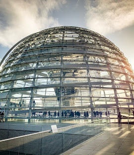
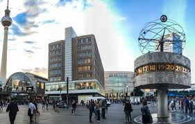

Бранденбурзькі ворота — символ об’єднання Німеччини та головна архітектурна пам’ятка міста.

Рейхстаг — будівля парламенту з прозорим куполом, який можна відвідати. 
Берлінський мур — важливий історичний об’єкт, що нагадує про поділ міста.

Острів музеїв — унікальний комплекс з відомими музеями світового рівня.

Александерплац — популярна площа з телевежею, оглядовим майданчиком і магазинами. 